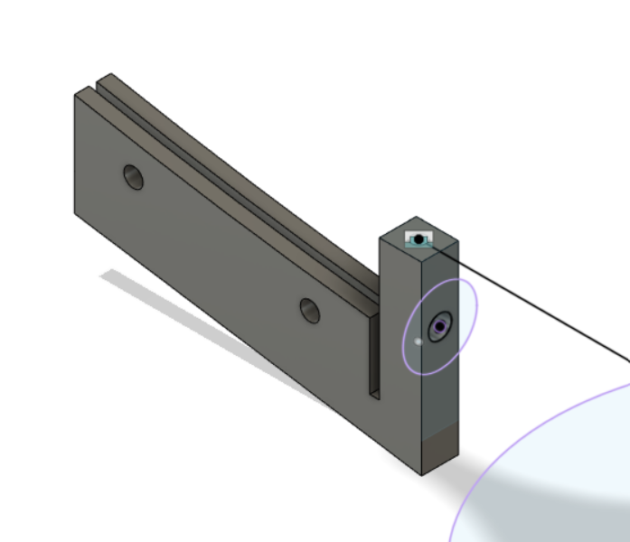
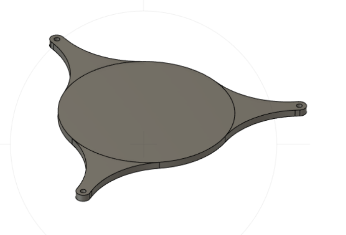

### Week 13
##### _Monday, November 28_
Nathan supervised the part print over the weekend, so we had tangible parts to look at and tweak as needed. Justin thought the lower bridge between the back and front of the part was too thin, so I went in and made it ~3 times thicker. I also adjusted the size of the holes and changed the number of side holes from 4 to 2.
Here is the final part we will use for the final cooker:

Xavier also adjusted the prongs on the secondary reflector so that they would align with the top holes on the bracket.

##### _Wednesday, November 30_
[Head back to the home page](../index.html).